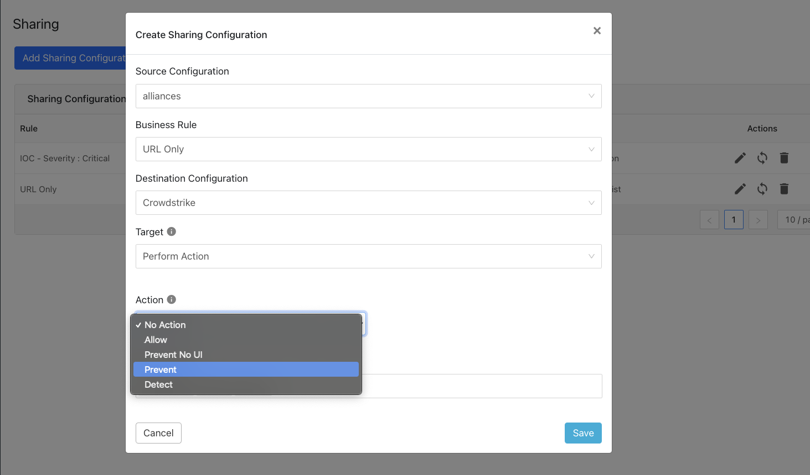

Configure Threat Exchange IoC Sharing
Make sure to identify the sharing requirements between systems before configuring.
 |
Add a Sharing Configuration
In the Threat Exchange module, click Sharing in the left navigation bar. The Sharing page displays the existing relationships for each sharing configuration in grid view as shown below. The Sharing page also has inputs to configure new sharing from one plugin to another.

Select the source plugin configuration
Select the business rule and destination configuration. Sharing configurations are unidirectional. data obtained from one plug-in is shared with another plugged-in system. To achieve bi- or multi-directional sharing, configure each separately.
 Select Target. Each plugin will have a different target or destination for the IoC.
Some plugins (like CrowdStrike) support multiple actions that equate to where the IoC could go and therefore what the receiving system will do with a matching indicator. Each plugin guide will specify what action(s) are available.
Some systems will support the IoC only to be used to match for certain endpoint OS (Windows, Mac, Linux). Each plugin guide will specify if the endpoint match is an available option.
Click Save.

Adding a new sharing configuration on the active source poll will share the existing IoCs of the configuration to the destination configuration. Whenever a new sharing configuration is built, all the active IoCs will also be considered for sharing if they match the source/destination combination.
Note
Plugins that do not have API for ingesting data cannot receive threat data. This is true of the installed plugin API Source, which provides a bucket associated with an API endpoint for remote 3rd-party systems to push data to. Once a Sharing policy has been added, it takes effect.
After a sharing configuration has been created, the sharing table will show the rule being invoked, the source system providing the potential IoC matches, the destination system that will receive matching IoC, and the target applicable to that rule. Multiple Sharing configurations can be made to support mapping certain IoC to multiple targets even on the system destination system.
 |
Modify, Test, or Delete a Sharing Configuration
Each configuration supports 3 actions:
Edit the rule by clicking on the pencil icon.
Test the rule by clicking on the synchronization icon. This tests how many IoC will actually be sent to the destination system based on the timeframe and the rule.
Delete the rule by clicking on the garbage can icon.